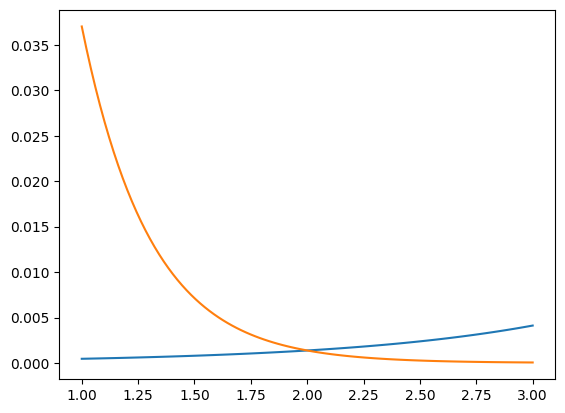
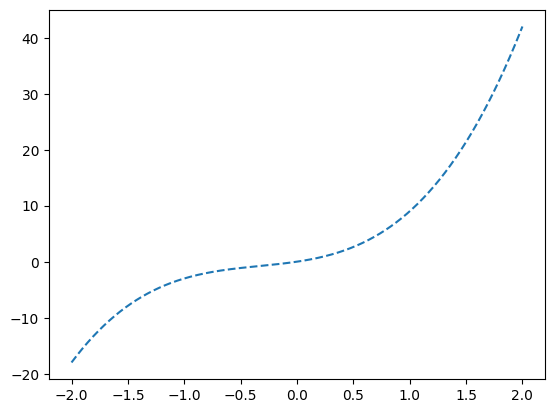
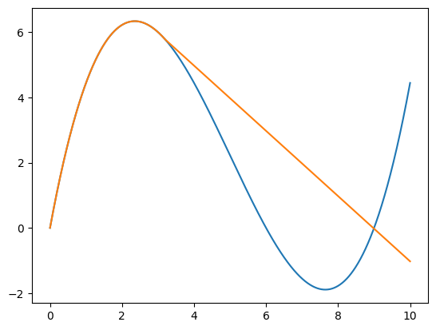
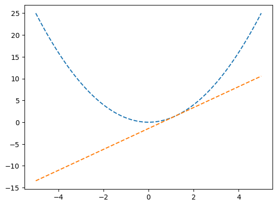

import numpy as np
import matplotlib.pyplot as plt2wk 적분 자세히
PP2024
16번(그래프의 교점)
x = np.linspace(1,3,100)
f = 3**(x-8)
g = (1/27)**x
plt.plot(x,f)
plt.plot(x,g)
11번(등차수열)
n = np.linspace(1,15,15)
d =4
an = (n-7)*d
np.abs(an[5]),np.abs(an[7]),(4.0, 4.0, [60.0])np.sum(an) #답 구하기!60.0#8번 삼차함수 간단한 적분 (y값 mean * 밑변) + np.random.rand
#풀이 1
f = lambda x: (3*x**4 -3*x)/(x-1)
x = np.linspace(-2,2,1000)
plt.plot(x,f(x),'--') #그래프 그리기
np.mean(f(x))*4 # 정답
##############
# 풀이 2 (rand)
# x_rand = np.random.rand(1000000)*4 - 2 ## -2~2 까지 임의의수가 골고루 퍼져있음.
# np.mean(f(x_rand)) *4
# random.rand --> 기본 0~1 / 범위만큼 곱하고 + 연산자로 범위 조절
##############
# 풀이3 (사다리꼴법 사용)
# f = lambda x: (3*x**4 -3*x)/(x-1)
# x = np.linspace(-2,2,10000)
# delta = x[1] - x[0] #x의 단위 생성
# f_arr = f(x) # y값들의 array생성
# F_arr = np.cumsum(f_arr) * delta
# F_arr[-1]
# # x[np.argmin(F_arr)] ## 넓이가 0이 되는 x값16.053206593500782
26번 입체도형(삼각함수) 적분
x =np.linspace(3/4*np.pi,5/4*np.pi,1000)
f = lambda x : np.sqrt((1-2*x)*np.cos(x))
np.mean(f(x)**2)*(2/4*np.pi) #y값에 정사각형이므로 제곱을 해줌7.46994736728054919번 삼각함수와 bool연산
x = np.linspace(1,15,15)
f = lambda x:np.sin(np.pi/4*x)
sum(x[f(2+x)*f(2-x) <1/4])
# x[f(2+x)*f(2-x) <1/4] ## 조건을 만족시키는 x값32.012번 t값에 따른 (3차) 함수 넓이 변화 / 함수정의 사용(make_gfunction)
x = np.linspace(0,10,1001)
t = 3.2 # t=3.2로 임의로 정의
f = lambda x : 1/9*x*(x-6)*(x-9)
# g(x) 정의
def make_gfunction(t):
def g(x):
if x<t:
return f(x)
else:
return -(x-t)+f(t)
return g
#### t값에 따른 그래프 그리기
g=make_gfunction(t)
fx = list(map(f,x))
gx = list(map(g,x))
plt.plot(x,fx,label="f(x)")
plt.plot(x,gx,label="g(x)")
### g(x)와 x축 넓이 구하는 함수생성
def cal_area(t):
# t=3.2
g = make_gfunction(t)
fx = list(map(f,x))
gx = list(map(g,x))
Gx = np.cumsum(gx)*0.01
S = np.max(Gx)
return S
t = np.linspace(0,6,101)[1:-1]
St = list(map(cal_area,t))
np.max(St)32.24994166666667range 활용(with 등차수열)
list(range(10))[0, 1, 2, 3, 4, 5, 6, 7, 8, 9]list(range(3,10,2))[3, 5, 7, 9]f = lambda x: x**2
list(map(f,[1,2,3,4]))[1, 4, 9, 16]np.linspace(1,31,11) ## 1부터 31까지 3단위로 쪼개기
# = np.array(range(1,31,3))
# = np.arange(1,32,3)
# = n = np.arange(1,12) / 3*n-2
# = a = lambda n: 3*n-2 / a(1) ~ a(11)
# = n = np.arange(1,12) / a= lambda n: 3*n-2 / a(n)
# = n = np.arange(1,12) / a = lambda n: 3*n-2 / list(map(a,n))
# = n = np.arange(32) / n[1::3]array([ 1., 4., 7., 10., 13., 16., 19., 22., 25., 28., 31.])list 와 np.array의 관계(map)
- map 함수는 list에 적용되지만 np.array(넘파이 어레이)에는 적용 되지않음.
접선 리턴
def make_func(x0):
f = lambda x: x**2
def func(x):
h = 0.0001
a = (f(x0+h)-f(x0))/h
return a*(x-x0) + f(x0)
return funcx = np.linspace(-5,5,101)
tan_line = make_func(1.2)
plt.plot(x,x**2,'--')
plt.plot(x,tan_line(x),'--')